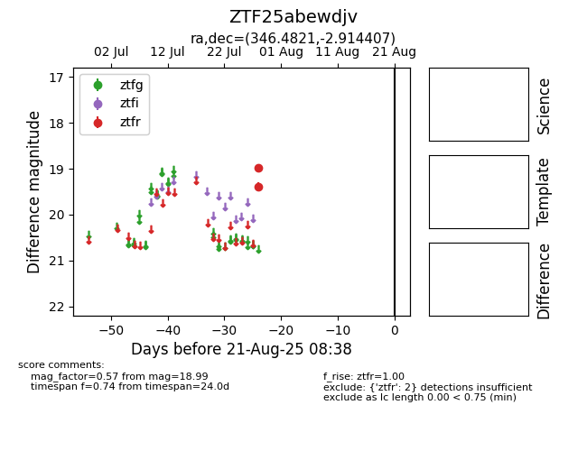

Target ZTF25abewdjv at 2025-08-21 08:38, see:
FINK: fink-portal.org/ZTF25abewdjv
Lasair: lasair-ztf.lsst.ac.uk/objects/ZTF25abewdjv
ALeRCE: alerce.online/object/ZTF25abewdjv
alt names
ZTF25abewdjv (ztf,alerce)
coordinates:
equatorial (ra, dec) = (346.4821,-2.91441)
galactic (l, b) = (72.1979,-55.03292)
photometry
last ztfr=18.99
2 ztfr detections
